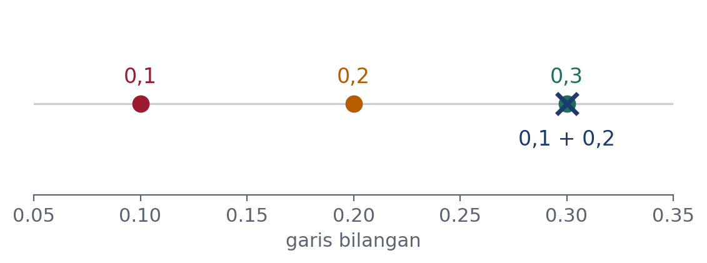

Pemrograman Komputer · Kelas B
Dr. Mohammad Jamhuri
Program Studi Matematika · Fakultas Sains dan Teknologi
UIN Maulana Malik Ibrahim Malang
Pertemuan 1 · Buku Bab 1 dan 2 · 120 menit
Pertanyaan yang dijawab hari ini:
Kenapa kode yang sama bisa jalan di satu komputer dan gagal di komputer lain — dan kenapa \(0{,}1 + 0{,}2\) bukan \(0{,}3\)?
Pekan ini di laboratorium: Praktikum 1, menjalankan sendiri apa yang dibahas hari ini.
Bagian satu
Buku Bab 1
Sesi interaktif
Ketik python tanpa argumen. Cocok untuk
mencoba satu dua baris lalu langsung dilupakan.
Berkas skrip
Berkas .py, dijalankan dengan
python nama.py. Bentuk baku untuk kode yang dipakai lagi.
Notebook Jupyter
Kode dan tulisan dalam sel yang bisa dijalankan terpisah. Grafiknya langsung muncul di bawah selnya.
Buku ini memakai bentuk kedua untuk sebagian besar isinya, dan bentuk ketiga saat menjelajah data.
Sel bisa dijalankan dalam urutan apa pun.
Akibatnya, keadaan yang terlihat di layar belum tentu bisa dicapai dengan menjalankan notebook itu dari atas ke bawah. Notebook yang kelihatannya jalan sempurna bisa gagal total begitu dijalankan ulang dari awal.
Biasakan memilih Restart Kernel and Run All Cells sebelum menyimpan atau membagikannya.
Ini bukan soal kerapian. Skripsi yang tidak bisa dijalankan ulang tidak bisa dipertahankan.
Satu komputer bisa memuat beberapa pemasangan Python sekaligus: bawaan sistem, unduhan dari python.org, Anaconda, dan lingkungan virtual.
python -c "import sys; print(sys.executable)"
Gejala yang paling sering ditemui.
pip install pandas berhasil, tetapi
import pandas tetap gagal. Sebabnya pip yang
dipanggil milik Python yang berbeda dari yang menjalankan kode.
Karena itu selalu tulis
python -m pip, bukan pip saja.
Satu Python untuk semua proyek
Skripsi Anda butuh pandas 3.0. Proyek dosen pembimbing masih pakai pandas 2.2. Memasang yang satu merusak yang lain, dan Anda baru tahu berminggu kemudian.
Satu lingkungan tiap proyek
Tiap proyek punya folder .venv sendiri.
Apa yang dipasang di satu proyek tidak menyentuh proyek lain sama sekali.
Perintahnya dilatih di praktikum pekan ini. Yang perlu dipahami hari ini alasannya, bukan hafalan perintahnya.
Bagian dua
Buku Bab 2
Di banyak bahasa, peubah dibayangkan sebagai kotak yang menyimpan nilai. Di Python bayangan itu menyesatkan.
Peubah itu label yang ditempelkan pada objek. Penugasan memindahkan labelnya, bukan menyalin isinya.
Beda ini tampak akademis sekarang. Di Bab 5 ia jadi sumber galat yang paling sering menjebak.
a = [1, 2, 3] b = a print(id(a) == id(b)) b = [1, 2, 3] print(id(a) == id(b), a == b)
True False True
Setelah b ditugasi objek baru, isinya
memang sama. Tetapi objeknya bukan objek yang
sama.
is membandingkan
identitas.
== membandingkan nilai.
Bagian tiga
print(2 ** 200)
1606938044258990275541962092341162602522202993782792835301376
Enam puluh satu digit, tepat, tanpa pembulatan. Bilangan itu tumbuh terus selama memorinya masih ada.
Kebanyakan bahasa lain menyerah di sekitar \(9{,}2 \times 10^{18}\), batas bilangan bulat 64 bit. Python tidak.
sys.float_info.max -> 1.7976931348623157e+308 sys.float_info.dig -> 15
Tipe float memakai format biner 64 bit:
sekitar 15 sampai 17 angka desimal bermakna, batas atas
\(1{,}8 \times 10^{308}\).
float(2**2000)
OverflowError: int too large to convert to float
Bulat boleh raksasa. Riil punya langit-langit, dan langit-langit itu kadang tertabrak diam-diam.
a = 0.1 + 0.2 print(a == 0.3) print(f"{a:.20f}")
False 0.30000000000000004441
Ini bukan bug Python. Setiap bahasa yang memakai bilangan titik-mengambang berperilaku sama. Yang berbeda hanya berapa angka yang ditampilkan.

Pecahan \(0{,}1\) dalam basis dua adalah pecahan berulang, persis seperti \(\tfrac{1}{3}\) dalam basis sepuluh. Komputer memotongnya pada 53 bit.
Yang tersimpan bukan \(0{,}1\), melainkan bilangan terdekat yang dapat diwakili. Menjumlahkan dua hampiran menghasilkan hampiran ketiga, dan hampiran itu tidak persis \(0{,}3\).
Pelajaran praktisnya. Jangan pernah
membandingkan dua bilangan riil dengan ==. Bandingkan
selisihnya terhadap sebuah toleransi.
print(7 // 2, 7 % 2) print(-7 // 2, -7 % 2)
3 1 -4 1
Mengapa \(-4\), bukan \(-3\)? Operator //
membulatkan ke bawah, bukan memotong menuju nol.
Akibatnya sisa bagi selalu tidak negatif untuk pembagi positif — sifat yang justru berguna dalam aritmetika modular.
int(2.7) -> 2 int(-2.7) -> -2
Fungsi int memotong
menuju nol. Fungsi round membulatkan ke yang terdekat —
tetapi menyimpan kejutan untuk nilai yang tepat di tengah.
for v in [0.5, 1.5, 2.5, 3.5]: print(v, round(v))
0.5 0 1.5 2 2.5 2 3.5 4
Nilai
setengah dibulatkan ke bilangan genap terdekat,
bukan selalu ke atas.
Tujuannya menghindari bias sistematis. Kalau setengah selalu dibulatkan ke atas, jumlah dari banyak pembulatan akan cenderung berlebih. Pada satu tagihan tidak terasa; pada satu juta tagihan terasa sekali.
Inilah contoh pertama tema yang akan berulang sepanjang semester: keputusan perancangan yang tampak aneh, ternyata punya alasan statistik.
Bagian empat
0, 0.0, "", [], {}, set(), None, False -> False
"0", [0], " ", 0.1 -> True
Yang dianggap salah ada dua golongan: nol untuk tipe bilangan, dan kosong untuk tipe wadah.
Perhatikan teks "0" dan list [0] justru bernilai
benar, sebab keduanya tidak kosong.
Menulis if nilai: untuk memeriksa apakah sebuah
argumen diberikan akan keliru kalau nilai yang sah kebetulan nol atau kosong.
Diskon sebesar 0 persen dan diskon yang memang tidak diberikan akan diperlakukan sama.
Kalau yang Anda maksud ketiadaan, tulis
if nilai is None: terang-terangan.
is dan ==
menanyakan hal yang berbeda.== hampir selalu salah.Praktikum pekan ini
Praktikum 1: membuat lingkungan virtual sendiri, lalu menyelidiki titik-mengambang dengan tangan Anda sendiri.
Tugas rumah
Pertemuan berikutnya: Percabangan dan Perulangan
Bekal awal: baca Bab 3 seluruhnya
Pertemuan 1 selesai
Buku: Python untuk Machine Learning dan Data Science, Bab 1 dan 2
Kode: github.com/jamhuri-tech/buku-python-ml-kode
Dr. Mohammad Jamhuri — UIN Maulana Malik Ibrahim · m.jamhuri@mat.uin-malang.ac.id